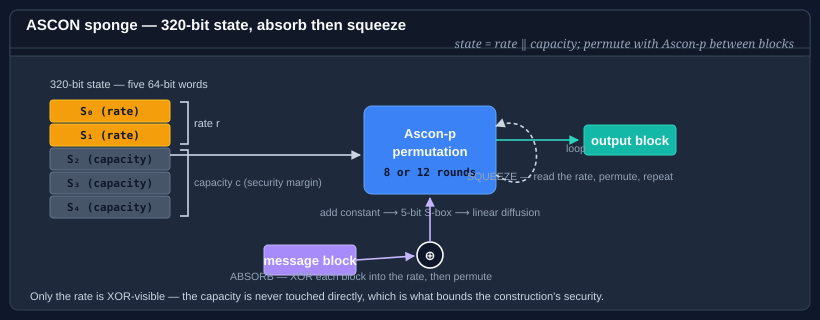

Using ASCON
ASCON is a family of lightweight cryptographic algorithms standardized by NIST in SP 800-232 (August 2025). All members of the family share a single 320-bit sponge state — five 64-bit words — and a common permutation called Ascon-p. The permutation is compact enough to run on the smallest microcontrollers, yet resists all known distinguishing attacks and has a well-studied, wide peer-reviewed security margin.

Bodu.Security.Cryptography ships all four NIST-defined algorithm types:
| Type | Algorithm name | Category | What it does |
|---|---|---|---|
| AsconHash256 | ASCON-HASH256 |
Hash | Fixed-length 256-bit digest. Conservative 12-round absorption. |
| AsconHashA256 | ASCON-HASHA256 |
Hash | Fixed-length 256-bit digest. 8-round absorption for higher throughput. |
| AsconXof128 | ASCON-XOF128 |
XOF | Variable-length output — squeeze any number of bytes from a single absorbed message. |
| AsconCxof128 | ASCON-CXOF128 |
XOF | Variable-length output with a customization string — separates output domains from the same primitive. |
| AsconAead128 | ASCON-AEAD128 |
AEAD | Authenticated encryption — 128-bit key, 128-bit nonce, 128-bit authentication tag. |
Choosing the right algorithm
| If you need… | Reach for | Why |
|---|---|---|
| A fixed-length 256-bit digest (conservative) | AsconHash256 |
12-round absorption throughout — maximum security margin. |
| A fixed-length 256-bit digest (throughput) | AsconHashA256 |
8-round absorption — faster on large inputs; squeeze phase is unchanged. |
| An output of arbitrary length — key derivation, stream seed | AsconXof128 |
Squeeze as many bytes as needed from one absorbed input. |
| Multiple independent output functions from one primitive | AsconCxof128 |
A customization string domain-separates the output; same primitive, different contexts. |
| Encrypt-and-authenticate a message | AsconAead128 |
Sponge-based AEAD with a 128-bit key and tag; no separate MAC step required. |
When in doubt: reach for AsconHash256 for hashing and AsconAead128 for authenticated encryption.
One permutation, four roles
The defining feature of the family is that hashing, extendable output, and authenticated encryption are all built from the same sponge — a 320-bit state and the Ascon-p permutation — rather than from three unrelated primitives. The role is determined entirely by how the sponge is initialised and which phases (absorb, squeeze, key injection, domain separation) are applied:
| Role | Type(s) | What the sponge does |
|---|---|---|
| Hash | AsconHash256, AsconHashA256 |
Absorb the message, then squeeze a fixed 256-bit digest. |
| XOF | AsconXof128, AsconCxof128 |
Absorb the message, then squeeze an arbitrary number of output bytes. |
| AEAD | AsconAead128 |
Inject key and nonce, absorb AAD, encrypt by XORing the rate, then squeeze a tag. |
The practical payoff is a single, small implementation surface: one permutation to audit, one state layout, one round function. A device that already ships ASCON for authenticated encryption gets hashing and key derivation for free. NIST SP 800-232 specifies all of these under one umbrella, so they share a common security analysis.
The shared permutation
All five types use the same Ascon-p permutation. Each call applies a configurable number of identical rounds (up to 12) to the 320-bit state. Each round is:
- Constant addition — XOR a round-dependent constant into state word S₂ to break round symmetry.
- Substitution — a 5-bit S-box applied simultaneously in bit-sliced fashion across all 64 bit-columns of the state, providing non-linearity.
- Linear diffusion — each word is XORed with two rotated copies of itself using word-specific rotation constants, spreading any change across the full state.
The round count is the throughput / margin trade-off. Absorption phases use 12 rounds
(AsconHash256) or 8 rounds (AsconHashA256, AsconXof128, AsconCxof128, AsconAead128).
Squeeze phases and AEAD finalization always use 12 rounds, so the output step carries the full
security margin in every variant.
Quick-start examples
Hash
using System.Text;
using Bodu.Security.Cryptography;
byte[] data = Encoding.UTF8.GetBytes("the quick brown fox");
using var hash = new AsconHash256();
byte[] digest = hash.ComputeHash(data); // always 32 bytes
string hex = Convert.ToHexString(digest);
XOF — deriving two keys from one input
using System.Security.Cryptography;
using Bodu.Security.Cryptography;
byte[] ikm = RandomNumberGenerator.GetBytes(32);
using var xof = new AsconXof128();
xof.Absorb(ikm);
byte[] encKey = new byte[32];
byte[] macKey = new byte[32];
xof.Squeeze(encKey); // first 32 bytes of XOF output
xof.Squeeze(macKey); // next 32 bytes — independent of encKey
AEAD — encrypt and authenticate
using System.Security.Cryptography;
using System.Text;
using Bodu.Security.Cryptography;
byte[] key = RandomNumberGenerator.GetBytes(AsconAead128.KeySize / 8); // 16 bytes
byte[] nonce = RandomNumberGenerator.GetBytes(AsconAead128.NonceSize / 8); // 16 bytes
byte[] plaintext = Encoding.UTF8.GetBytes("secret payload");
byte[] aad = Encoding.UTF8.GetBytes("request-id:abc123");
// Encrypt — output is ciphertext || 16-byte tag
using var enc = new AsconAead128(key, nonce);
byte[] cipherWithTag = new byte[plaintext.Length + enc.TagSize / 8];
enc.ProcessAssociatedData(aad);
enc.Encrypt(plaintext, cipherWithTag);
// Decrypt — throws CryptographicException if tampered
using var dec = new AsconAead128(key, nonce);
byte[] recovered = new byte[plaintext.Length];
dec.ProcessAssociatedData(aad);
dec.Decrypt(cipherWithTag, recovered);
When to reach for ASCON
ASCON is a good choice when:
- You need a NIST-approved algorithm (SP 800-232, 2025) alongside or instead of SHA-2 or AES.
- You are targeting constrained hardware — microcontrollers, IoT devices, FPGAs — where the 320-bit ASCON state (40 bytes) fits in registers and the simple permutation is efficient even without hardware acceleration.
- You need variable-length output without a full key derivation framework;
AsconXof128andAsconCxof128provide this directly with a well-understood security model. - You want a single primitive family that covers hashing, XOF, and AEAD — reducing cryptographic surface area and simplifying key management.
On x86-64 targets with AES-NI and SHA extensions, the BCL's hardware-accelerated
System.Security.Cryptography.SHA256 and AesGcm will
typically outperform software ASCON in raw throughput. Use ASCON when standards compliance,
portability, or XOF/AEAD requirements point to it — not primarily for throughput on
well-provisioned servers.
Where to go next
- ASCON hashing — full pattern guide for
AsconHash256andAsconHashA256. - ASCON extendable output (XOF) — all patterns for
AsconXof128andAsconCxof128. - ASCON authenticated encryption (AEAD) — all patterns for
AsconAead128. - NIST SP 800-232 — the normative specification.
- API reference: AsconHash256 · AsconXof128 · AsconAead128
- Hashing & Cryptography guides — every guide in this topic, across Bodu.IO.Hashing and Bodu.Security.Cryptography.